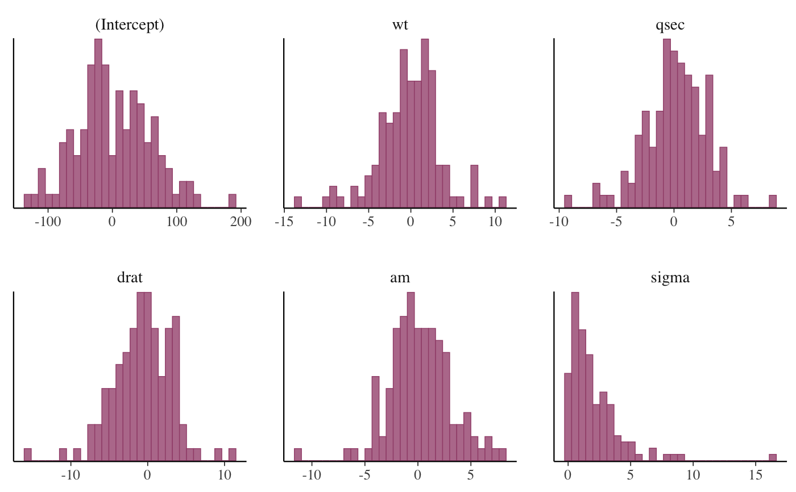

The functions described on this page are used to specify the
prior-related arguments of the various modeling functions in the
rstanarm package (to view the priors used for an existing model see
prior_summary).
The default priors used in the various rstanarm modeling functions
are intended to be weakly informative in that they provide moderate
regularization and help stabilize computation. For many applications the
defaults will perform well, but prudent use of more informative priors is
encouraged. Uniform prior distributions are possible (e.g. by setting
stan_glm's prior argument to NULL) but, unless
the data is very strong, they are not recommended and are not
non-informative, giving the same probability mass to implausible values as
plausible ones.
More information on priors is available in the vignette Prior Distributions for rstanarm Models as well as the vignettes for the various modeling functions. For details on the priors used for multilevel models in particular see the vignette Estimating Generalized (Non-)Linear Models with Group-Specific Terms with rstanarm and also the Covariance matrices section lower down on this page.
Usage
normal(location = 0, scale = NULL, autoscale = FALSE)
student_t(df = 1, location = 0, scale = NULL, autoscale = FALSE)
cauchy(location = 0, scale = NULL, autoscale = FALSE)
hs(df = 1, global_df = 1, global_scale = 0.01, slab_df = 4, slab_scale = 2.5)
hs_plus(
df1 = 1,
df2 = 1,
global_df = 1,
global_scale = 0.01,
slab_df = 4,
slab_scale = 2.5
)
laplace(location = 0, scale = NULL, autoscale = FALSE)
lasso(df = 1, location = 0, scale = NULL, autoscale = FALSE)
product_normal(df = 2, location = 0, scale = 1)
exponential(rate = 1, autoscale = FALSE)
decov(regularization = 1, concentration = 1, shape = 1, scale = 1)
lkj(regularization = 1, scale = 10, df = 1, autoscale = TRUE)
dirichlet(concentration = 1)
R2(location = NULL, what = c("mode", "mean", "median", "log"))
default_prior_intercept(family)
default_prior_coef(family)Arguments
- location
Prior location. In most cases, this is the prior mean, but for
cauchy(which is equivalent tostudent_twithdf=1), the mean does not exist andlocationis the prior median. The default value is \(0\), except forR2which has no default value forlocation. ForR2,locationpertains to the prior location of the \(R^2\) under a Beta distribution, but the interpretation of thelocationparameter depends on the specified value of thewhatargument (see the R2 family section in Details).- scale
Prior scale. The default depends on the family (see Details).
- autoscale
If
TRUEthen the scales of the priors on the intercept and regression coefficients may be additionally modified internally by rstanarm in the following cases. First, for Gaussian models only, the prior scales for the intercept, coefficients, and the auxiliary parametersigma(error standard deviation) are multiplied bysd(y). Additionally — not only for Gaussian models — if theQRargument to the model fitting function (e.g.stan_glm) isFALSEthen we also divide the prior scale(s) bysd(x). Prior autoscaling is also discussed in the vignette Prior Distributions for rstanarm Models- df, df1, df2
Prior degrees of freedom. The default is \(1\) for
student_t, in which case it is equivalent tocauchy. For the hierarchical shrinkage priors (hsandhs_plus) the degrees of freedom parameter(s) default to \(1\). For theproduct_normalprior, the degrees of freedom parameter must be an integer (vector) that is at least \(2\) (the default).- global_df, global_scale, slab_df, slab_scale
Optional arguments for the hierarchical shrinkage priors. See the Hierarchical shrinkage family section below.
- rate
Prior rate for the exponential distribution. Defaults to
1. For the exponential distribution, the rate parameter is the reciprocal of the mean.- regularization
Exponent for an LKJ prior on the correlation matrix in the
decovorlkjprior. The default is \(1\), implying a joint uniform prior.- concentration
Concentration parameter for a symmetric Dirichlet distribution. The default is \(1\), implying a joint uniform prior.
- shape
Shape parameter for a gamma prior on the scale parameter in the
decovprior. Ifshapeandscaleare both \(1\) (the default) then the gamma prior simplifies to the unit-exponential distribution.- what
A character string among
'mode'(the default),'mean','median', or'log'indicating how thelocationparameter is interpreted in theLKJcase. If'log', thenlocationis interpreted as the expected logarithm of the \(R^2\) under a Beta distribution. Otherwise,locationis interpreted as thewhatof the \(R^2\) under a Beta distribution. If the number of predictors is less than or equal to two, the mode of this Beta distribution does not exist and an error will prompt the user to specify another choice forwhat.- family
Not currently used.
Details
The details depend on the family of the prior being used:
Student t family
Family members:
normal(location, scale)student_t(df, location, scale)cauchy(location, scale)
Each of these functions also takes an argument autoscale.
For the prior distribution for the intercept, location,
scale, and df should be scalars. For the prior for the other
coefficients they can either be vectors of length equal to the number of
coefficients (not including the intercept), or they can be scalars, in
which case they will be recycled to the appropriate length. As the
degrees of freedom approaches infinity, the Student t distribution
approaches the normal distribution and if the degrees of freedom are one,
then the Student t distribution is the Cauchy distribution.
If scale is not specified it will default to \(2.5\), unless the
probit link function is used, in which case these defaults are scaled by a
factor of dnorm(0)/dlogis(0), which is roughly \(1.6\).
If the autoscale argument is TRUE, then the
scales will be further adjusted as described above in the documentation of
the autoscale argument in the Arguments section.
Hierarchical shrinkage family
Family members:
hs(df, global_df, global_scale, slab_df, slab_scale)hs_plus(df1, df2, global_df, global_scale, slab_df, slab_scale)
The hierarchical shrinkage priors are normal with a mean of zero and a
standard deviation that is also a random variable. The traditional
hierarchical shrinkage prior utilizes a standard deviation that is
distributed half Cauchy with a median of zero and a scale parameter that is
also half Cauchy. This is called the "horseshoe prior". The hierarchical
shrinkage (hs) prior in the rstanarm package instead utilizes
a regularized horseshoe prior, as described by Piironen and Vehtari (2017),
which recommends setting the global_scale argument equal to the ratio
of the expected number of non-zero coefficients to the expected number of
zero coefficients, divided by the square root of the number of observations.
The hierarhical shrinkpage plus (hs_plus) prior is similar except
that the standard deviation that is distributed as the product of two
independent half Cauchy parameters that are each scaled in a similar way
to the hs prior.
The hierarchical shrinkage priors have very tall modes and very fat tails.
Consequently, they tend to produce posterior distributions that are very
concentrated near zero, unless the predictor has a strong influence on the
outcome, in which case the prior has little influence. Hierarchical
shrinkage priors often require you to increase the
adapt_delta tuning parameter in order to diminish the number
of divergent transitions. For more details on tuning parameters and
divergent transitions see the Troubleshooting section of the How to
Use the rstanarm Package vignette.
Laplace family
Family members:
laplace(location, scale)lasso(df, location, scale)
Each of these functions also takes an argument autoscale.
The Laplace distribution is also known as the double-exponential distribution. It is a symmetric distribution with a sharp peak at its mean / median / mode and fairly long tails. This distribution can be motivated as a scale mixture of normal distributions and the remarks above about the normal distribution apply here as well.
The lasso approach to supervised learning can be expressed as finding the
posterior mode when the likelihood is Gaussian and the priors on the
coefficients have independent Laplace distributions. It is commonplace in
supervised learning to choose the tuning parameter by cross-validation,
whereas a more Bayesian approach would be to place a prior on “it”,
or rather its reciprocal in our case (i.e. smaller values correspond
to more shrinkage toward the prior location vector). We use a chi-square
prior with degrees of freedom equal to that specified in the call to
lasso or, by default, 1. The expectation of a chi-square random
variable is equal to this degrees of freedom and the mode is equal to the
degrees of freedom minus 2, if this difference is positive.
It is also common in supervised learning to standardize the predictors
before training the model. We do not recommend doing so. Instead, it is
better to specify autoscale = TRUE, which
will adjust the scales of the priors according to the dispersion in the
variables. See the documentation of the autoscale argument above
and also the prior_summary page for more information.
Product-normal family
Family members:
product_normal(df, location, scale)
The product-normal distribution is the product of at least two independent
normal variates each with mean zero, shifted by the location
parameter. It can be shown that the density of a product-normal variate is
symmetric and infinite at location, so this prior resembles a
“spike-and-slab” prior for sufficiently large values of the
scale parameter. For better or for worse, this prior may be
appropriate when it is strongly believed (by someone) that a regression
coefficient “is” equal to the location, parameter even though
no true Bayesian would specify such a prior.
Each element of df must be an integer of at least \(2\) because
these “degrees of freedom” are interpreted as the number of normal
variates being multiplied and then shifted by location to yield the
regression coefficient. Higher degrees of freedom produce a sharper
spike at location.
Each element of scale must be a non-negative real number that is
interpreted as the standard deviation of the normal variates being
multiplied and then shifted by location to yield the regression
coefficient. In other words, the elements of scale may differ, but
the k-th standard deviation is presumed to hold for all the normal deviates
that are multiplied together and shifted by the k-th element of
location to yield the k-th regression coefficient. The elements of
scale are not the prior standard deviations of the regression
coefficients. The prior variance of the regression coefficients is equal to
the scale raised to the power of \(2\) times the corresponding element of
df. Thus, larger values of scale put more prior volume on
values of the regression coefficient that are far from zero.
Dirichlet family
Family members:
dirichlet(concentration)
The Dirichlet distribution is a multivariate generalization of the beta distribution. It is perhaps the easiest prior distribution to specify because the concentration parameters can be interpreted as prior counts (although they need not be integers) of a multinomial random variable.
The Dirichlet distribution is used in stan_polr for an
implicit prior on the cutpoints in an ordinal regression model. More
specifically, the Dirichlet prior pertains to the prior probability of
observing each category of the ordinal outcome when the predictors are at
their sample means. Given these prior probabilities, it is straightforward
to add them to form cumulative probabilities and then use an inverse CDF
transformation of the cumulative probabilities to define the cutpoints.
If a scalar is passed to the concentration argument of the
dirichlet function, then it is replicated to the appropriate length
and the Dirichlet distribution is symmetric. If concentration is a
vector and all elements are \(1\), then the Dirichlet distribution is
jointly uniform. If all concentration parameters are equal but greater than
\(1\) then the prior mode is that the categories are equiprobable, and
the larger the value of the identical concentration parameters, the more
sharply peaked the distribution is at the mode. The elements in
concentration can also be given different values to represent that
not all outcome categories are a priori equiprobable.
Covariance matrices
Family members:
decov(regularization, concentration, shape, scale)lkj(regularization, scale, df)
(Also see vignette for stan_glmer,
Estimating
Generalized (Non-)Linear Models with Group-Specific Terms with rstanarm)
Covariance matrices are decomposed into correlation matrices and
variances. The variances are in turn decomposed into the product of a
simplex vector and the trace of the matrix. Finally, the trace is the
product of the order of the matrix and the square of a scale parameter.
This prior on a covariance matrix is represented by the decov
function.
The prior for a correlation matrix is called LKJ whose density is
proportional to the determinant of the correlation matrix raised to the
power of a positive regularization parameter minus one. If
regularization = 1 (the default), then this prior is jointly
uniform over all correlation matrices of that size. If
regularization > 1, then the identity matrix is the mode and in the
unlikely case that regularization < 1, the identity matrix is the
trough.
The trace of a covariance matrix is equal to the sum of the variances. We set the trace equal to the product of the order of the covariance matrix and the square of a positive scale parameter. The particular variances are set equal to the product of a simplex vector — which is non-negative and sums to \(1\) — and the scalar trace. In other words, each element of the simplex vector represents the proportion of the trace attributable to the corresponding variable.
A symmetric Dirichlet prior is used for the simplex vector, which has a
single (positive) concentration parameter, which defaults to
\(1\) and implies that the prior is jointly uniform over the space of
simplex vectors of that size. If concentration > 1, then the prior
mode corresponds to all variables having the same (proportion of total)
variance, which can be used to ensure the the posterior variances are not
zero. As the concentration parameter approaches infinity, this
mode becomes more pronounced. In the unlikely case that
concentration < 1, the variances are more polarized.
If all the variables were multiplied by a number, the trace of their
covariance matrix would increase by that number squared. Thus, it is
reasonable to use a scale-invariant prior distribution for the positive
scale parameter, and in this case we utilize a Gamma distribution, whose
shape and scale are both \(1\) by default, implying a
unit-exponential distribution. Set the shape hyperparameter to some
value greater than \(1\) to ensure that the posterior trace is not zero.
If regularization, concentration, shape and / or
scale are positive scalars, then they are recycled to the
appropriate length. Otherwise, each can be a positive vector of the
appropriate length, but the appropriate length depends on the number of
covariance matrices in the model and their sizes. A one-by-one covariance
matrix is just a variance and thus does not have regularization or
concentration parameters, but does have shape and
scale parameters for the prior standard deviation of that
variable.
Note that for stan_mvmer and stan_jm models an
additional prior distribution is provided through the lkj function.
This prior is in fact currently used as the default for those modelling
functions (although decov is still available as an option if the user
wishes to specify it through the prior_covariance argument). The
lkj prior uses the same decomposition of the covariance matrices
into correlation matrices and variances, however, the variances are not
further decomposed into a simplex vector and the trace; instead the
standard deviations (square root of the variances) for each of the group
specific parameters are given a half Student t distribution with the
scale and df parameters specified through the scale and df
arguments to the lkj function. The scale parameter default is 10
which is then autoscaled, whilst the df parameter default is 1
(therefore equivalent to a half Cauchy prior distribution for the
standard deviation of each group specific parameter). This prior generally
leads to similar results as the decov prior, but it is also likely
to be **less** diffuse compared with the decov prior; therefore it
sometimes seems to lead to faster estimation times, hence why it has
been chosen as the default prior for stan_mvmer and
stan_jm where estimation times can be long.
R2 family
Family members:
R2(location, what)
The stan_lm, stan_aov, and
stan_polr functions allow the user to utilize a function
called R2 to convey prior information about all the parameters.
This prior hinges on prior beliefs about the location of \(R^2\), the
proportion of variance in the outcome attributable to the predictors,
which has a Beta prior with first shape
hyperparameter equal to half the number of predictors and second shape
hyperparameter free. By specifying what to be the prior mode (the
default), mean, median, or expected log of \(R^2\), the second shape
parameter for this Beta distribution is determined internally. If
what = 'log', location should be a negative scalar; otherwise it
should be a scalar on the \((0,1)\) interval.
For example, if \(R^2 = 0.5\), then the mode, mean, and median of
the Beta distribution are all the same and thus the
second shape parameter is also equal to half the number of predictors.
The second shape parameter of the Beta distribution
is actually the same as the shape parameter in the LKJ prior for a
correlation matrix described in the previous subsection. Thus, the smaller
is \(R^2\), the larger is the shape parameter, the smaller are the
prior correlations among the outcome and predictor variables, and the more
concentrated near zero is the prior density for the regression
coefficients. Hence, the prior on the coefficients is regularizing and
should yield a posterior distribution with good out-of-sample predictions
if the prior location of \(R^2\) is specified in a reasonable
fashion.
References
Gelman, A., Carlin, J. B., Stern, H. S., Dunson, D. B., Vehtari, A., and Rubin, D. B. (2013). Bayesian Data Analysis. Chapman & Hall/CRC Press, London, third edition. https://stat.columbia.edu/~gelman/book/
Gelman, A., Jakulin, A., Pittau, M. G., and Su, Y. (2008). A weakly informative default prior distribution for logistic and other regression models. Annals of Applied Statistics. 2(4), 1360–1383.
Piironen, J., and Vehtari, A. (2017). Sparsity information and regularization in the horseshoe and other shrinkage priors. https://arxiv.org/abs/1707.01694
Stan Development Team. Stan Modeling Language Users Guide and Reference Manual. https://mc-stan.org/users/documentation/.
See also
The various vignettes for the rstanarm package also discuss and demonstrate the use of some of the supported prior distributions.
Examples
if (.Platform$OS.type != "windows" || .Platform$r_arch != "i386") {
fmla <- mpg ~ wt + qsec + drat + am
# Draw from prior predictive distribution (by setting prior_PD = TRUE)
prior_pred_fit <- stan_glm(fmla, data = mtcars, prior_PD = TRUE,
chains = 1, seed = 12345, iter = 250, # for speed only
prior = student_t(df = 4, 0, 2.5),
prior_intercept = cauchy(0,10),
prior_aux = exponential(1/2))
plot(prior_pred_fit, "hist")
# \donttest{
# Can assign priors to names
N05 <- normal(0, 5)
fit <- stan_glm(fmla, data = mtcars, prior = N05, prior_intercept = N05)
# }
# Visually compare normal, student_t, cauchy, laplace, and product_normal
compare_priors <- function(scale = 1, df_t = 2, xlim = c(-10, 10)) {
dt_loc_scale <- function(x, df, location, scale) {
1/scale * dt((x - location)/scale, df)
}
dlaplace <- function(x, location, scale) {
0.5 / scale * exp(-abs(x - location) / scale)
}
dproduct_normal <- function(x, scale) {
besselK(abs(x) / scale ^ 2, nu = 0) / (scale ^ 2 * pi)
}
stat_dist <- function(dist, ...) {
ggplot2::stat_function(ggplot2::aes_(color = dist), ...)
}
ggplot2::ggplot(data.frame(x = xlim), ggplot2::aes(x)) +
stat_dist("normal", size = .75, fun = dnorm,
args = list(mean = 0, sd = scale)) +
stat_dist("student_t", size = .75, fun = dt_loc_scale,
args = list(df = df_t, location = 0, scale = scale)) +
stat_dist("cauchy", size = .75, linetype = 2, fun = dcauchy,
args = list(location = 0, scale = scale)) +
stat_dist("laplace", size = .75, linetype = 2, fun = dlaplace,
args = list(location = 0, scale = scale)) +
stat_dist("product_normal", size = .75, linetype = 2, fun = dproduct_normal,
args = list(scale = 1))
}
# Cauchy has fattest tails, followed by student_t, laplace, and normal
compare_priors()
# The student_t with df = 1 is the same as the cauchy
compare_priors(df_t = 1)
# Even a scale of 5 is somewhat large. It gives plausibility to rather
# extreme values
compare_priors(scale = 5, xlim = c(-20,20))
# If you use a prior like normal(0, 1000) to be "non-informative" you are
# actually saying that a coefficient value of e.g. -500 is quite plausible
compare_priors(scale = 1000, xlim = c(-1000,1000))
}
#>
#> SAMPLING FOR MODEL 'continuous' NOW (CHAIN 1).
#> Chain 1:
#> Chain 1: Gradient evaluation took 2e-05 seconds
#> Chain 1: 1000 transitions using 10 leapfrog steps per transition would take 0.2 seconds.
#> Chain 1: Adjust your expectations accordingly!
#> Chain 1:
#> Chain 1:
#> Chain 1: WARNING: There aren't enough warmup iterations to fit the
#> Chain 1: three stages of adaptation as currently configured.
#> Chain 1: Reducing each adaptation stage to 15%/75%/10% of
#> Chain 1: the given number of warmup iterations:
#> Chain 1: init_buffer = 18
#> Chain 1: adapt_window = 95
#> Chain 1: term_buffer = 12
#> Chain 1:
#> Chain 1: Iteration: 1 / 250 [ 0%] (Warmup)
#> Chain 1: Iteration: 25 / 250 [ 10%] (Warmup)
#> Chain 1: Iteration: 50 / 250 [ 20%] (Warmup)
#> Chain 1: Iteration: 75 / 250 [ 30%] (Warmup)
#> Chain 1: Iteration: 100 / 250 [ 40%] (Warmup)
#> Chain 1: Iteration: 125 / 250 [ 50%] (Warmup)
#> Chain 1: Iteration: 126 / 250 [ 50%] (Sampling)
#> Chain 1: Iteration: 150 / 250 [ 60%] (Sampling)
#> Chain 1: Iteration: 175 / 250 [ 70%] (Sampling)
#> Chain 1: Iteration: 200 / 250 [ 80%] (Sampling)
#> Chain 1: Iteration: 225 / 250 [ 90%] (Sampling)
#> Chain 1: Iteration: 250 / 250 [100%] (Sampling)
#> Chain 1:
#> Chain 1: Elapsed Time: 0.015 seconds (Warm-up)
#> Chain 1: 0.016 seconds (Sampling)
#> Chain 1: 0.031 seconds (Total)
#> Chain 1:
#> Warning: The largest R-hat is 1.14, indicating chains have not mixed.
#> Running the chains for more iterations may help. See
#> https://mc-stan.org/misc/warnings.html#r-hat
#> Warning: Bulk Effective Samples Size (ESS) is too low, indicating posterior means and medians may be unreliable.
#> Running the chains for more iterations may help. See
#> https://mc-stan.org/misc/warnings.html#bulk-ess
#> Warning: Tail Effective Samples Size (ESS) is too low, indicating posterior variances and tail quantiles may be unreliable.
#> Running the chains for more iterations may help. See
#> https://mc-stan.org/misc/warnings.html#tail-ess
#>
#> SAMPLING FOR MODEL 'continuous' NOW (CHAIN 1).
#> Chain 1:
#> Chain 1: Gradient evaluation took 2e-05 seconds
#> Chain 1: 1000 transitions using 10 leapfrog steps per transition would take 0.2 seconds.
#> Chain 1: Adjust your expectations accordingly!
#> Chain 1:
#> Chain 1:
#> Chain 1: Iteration: 1 / 2000 [ 0%] (Warmup)
#> Chain 1: Iteration: 200 / 2000 [ 10%] (Warmup)
#> Chain 1: Iteration: 400 / 2000 [ 20%] (Warmup)
#> Chain 1: Iteration: 600 / 2000 [ 30%] (Warmup)
#> Chain 1: Iteration: 800 / 2000 [ 40%] (Warmup)
#> Chain 1: Iteration: 1000 / 2000 [ 50%] (Warmup)
#> Chain 1: Iteration: 1001 / 2000 [ 50%] (Sampling)
#> Chain 1: Iteration: 1200 / 2000 [ 60%] (Sampling)
#> Chain 1: Iteration: 1400 / 2000 [ 70%] (Sampling)
#> Chain 1: Iteration: 1600 / 2000 [ 80%] (Sampling)
#> Chain 1: Iteration: 1800 / 2000 [ 90%] (Sampling)
#> Chain 1: Iteration: 2000 / 2000 [100%] (Sampling)
#> Chain 1:
#> Chain 1: Elapsed Time: 0.05 seconds (Warm-up)
#> Chain 1: 0.048 seconds (Sampling)
#> Chain 1: 0.098 seconds (Total)
#> Chain 1:
#>
#> SAMPLING FOR MODEL 'continuous' NOW (CHAIN 2).
#> Chain 2:
#> Chain 2: Gradient evaluation took 1.1e-05 seconds
#> Chain 2: 1000 transitions using 10 leapfrog steps per transition would take 0.11 seconds.
#> Chain 2: Adjust your expectations accordingly!
#> Chain 2:
#> Chain 2:
#> Chain 2: Iteration: 1 / 2000 [ 0%] (Warmup)
#> Chain 2: Iteration: 200 / 2000 [ 10%] (Warmup)
#> Chain 2: Iteration: 400 / 2000 [ 20%] (Warmup)
#> Chain 2: Iteration: 600 / 2000 [ 30%] (Warmup)
#> Chain 2: Iteration: 800 / 2000 [ 40%] (Warmup)
#> Chain 2: Iteration: 1000 / 2000 [ 50%] (Warmup)
#> Chain 2: Iteration: 1001 / 2000 [ 50%] (Sampling)
#> Chain 2: Iteration: 1200 / 2000 [ 60%] (Sampling)
#> Chain 2: Iteration: 1400 / 2000 [ 70%] (Sampling)
#> Chain 2: Iteration: 1600 / 2000 [ 80%] (Sampling)
#> Chain 2: Iteration: 1800 / 2000 [ 90%] (Sampling)
#> Chain 2: Iteration: 2000 / 2000 [100%] (Sampling)
#> Chain 2:
#> Chain 2: Elapsed Time: 0.051 seconds (Warm-up)
#> Chain 2: 0.052 seconds (Sampling)
#> Chain 2: 0.103 seconds (Total)
#> Chain 2:
#>
#> SAMPLING FOR MODEL 'continuous' NOW (CHAIN 3).
#> Chain 3:
#> Chain 3: Gradient evaluation took 1.1e-05 seconds
#> Chain 3: 1000 transitions using 10 leapfrog steps per transition would take 0.11 seconds.
#> Chain 3: Adjust your expectations accordingly!
#> Chain 3:
#> Chain 3:
#> Chain 3: Iteration: 1 / 2000 [ 0%] (Warmup)
#> Chain 3: Iteration: 200 / 2000 [ 10%] (Warmup)
#> Chain 3: Iteration: 400 / 2000 [ 20%] (Warmup)
#> Chain 3: Iteration: 600 / 2000 [ 30%] (Warmup)
#> Chain 3: Iteration: 800 / 2000 [ 40%] (Warmup)
#> Chain 3: Iteration: 1000 / 2000 [ 50%] (Warmup)
#> Chain 3: Iteration: 1001 / 2000 [ 50%] (Sampling)
#> Chain 3: Iteration: 1200 / 2000 [ 60%] (Sampling)
#> Chain 3: Iteration: 1400 / 2000 [ 70%] (Sampling)
#> Chain 3: Iteration: 1600 / 2000 [ 80%] (Sampling)
#> Chain 3: Iteration: 1800 / 2000 [ 90%] (Sampling)
#> Chain 3: Iteration: 2000 / 2000 [100%] (Sampling)
#> Chain 3:
#> Chain 3: Elapsed Time: 0.051 seconds (Warm-up)
#> Chain 3: 0.064 seconds (Sampling)
#> Chain 3: 0.115 seconds (Total)
#> Chain 3:
#>
#> SAMPLING FOR MODEL 'continuous' NOW (CHAIN 4).
#> Chain 4:
#> Chain 4: Gradient evaluation took 1.1e-05 seconds
#> Chain 4: 1000 transitions using 10 leapfrog steps per transition would take 0.11 seconds.
#> Chain 4: Adjust your expectations accordingly!
#> Chain 4:
#> Chain 4:
#> Chain 4: Iteration: 1 / 2000 [ 0%] (Warmup)
#> Chain 4: Iteration: 200 / 2000 [ 10%] (Warmup)
#> Chain 4: Iteration: 400 / 2000 [ 20%] (Warmup)
#> Chain 4: Iteration: 600 / 2000 [ 30%] (Warmup)
#> Chain 4: Iteration: 800 / 2000 [ 40%] (Warmup)
#> Chain 4: Iteration: 1000 / 2000 [ 50%] (Warmup)
#> Chain 4: Iteration: 1001 / 2000 [ 50%] (Sampling)
#> Chain 4: Iteration: 1200 / 2000 [ 60%] (Sampling)
#> Chain 4: Iteration: 1400 / 2000 [ 70%] (Sampling)
#> Chain 4: Iteration: 1600 / 2000 [ 80%] (Sampling)
#> Chain 4: Iteration: 1800 / 2000 [ 90%] (Sampling)
#> Chain 4: Iteration: 2000 / 2000 [100%] (Sampling)
#> Chain 4:
#> Chain 4: Elapsed Time: 0.054 seconds (Warm-up)
#> Chain 4: 0.052 seconds (Sampling)
#> Chain 4: 0.106 seconds (Total)
#> Chain 4:
#> Warning: `aes_()` was deprecated in ggplot2 3.0.0.
#> ℹ Please use tidy evaluation idioms with `aes()`
